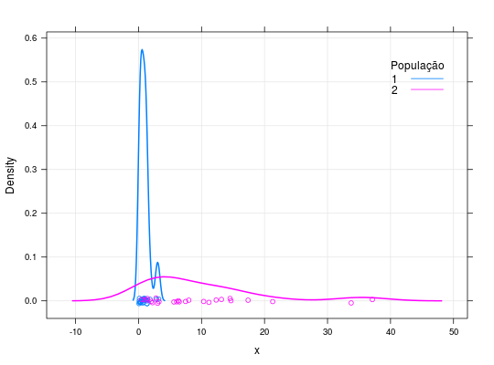
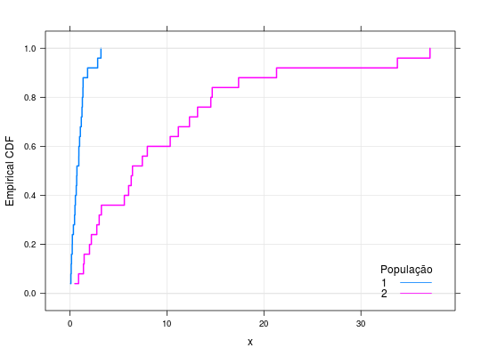

Dados provenientes de simulação. Foram 50 dados simulados de duas populações, P1 e P2, definidas pelos modelos probabilísticos exponenciais \(P1 \sim Exp(1)\) e \(P2 \sim Exp(0,1)\). O objetivo da simulação é explorar os métodos de classificação.
Um data.frame com 50 observações e 2 variáveis, em que
popxpopFERREIRA (2011), Exemplo 13.2, pág. 592-593.
data(FerreiraEg13.2)#> Warning: data set ‘FerreiraEg13.2’ not foundstr(FerreiraEg13.2)#> 'data.frame': 50 obs. of 2 variables: #> $ pop: Factor w/ 2 levels "1","2": 1 1 1 1 1 1 1 1 1 1 ... #> $ x : num 3.202 0.7 0.479 0.655 1 ...summary(FerreiraEg13.2)#> pop x #> 1:25 Min. : 0.0721 #> 2:25 1st Qu.: 0.7066 #> Median : 1.4334 #> Mean : 5.3283 #> 3rd Qu.: 6.4188 #> Max. :37.1188library(lattice) library(latticeExtra) densityplot(~x, groups = pop, data = FerreiraEg13.2, grid = TRUE, lwd = 2, auto.key = list( title = "População", cex.title = 1, corner = c(0.95, 0.90), points = FALSE))ecdfplot(~x, groups = pop, data = FerreiraEg13.2, grid = TRUE, lwd = 2, auto.key = list( title = "População", cex.title = 1, corner = c(0.95, 0.05), points = FALSE))(discr <- MASS::lda(pop ~ ., data = FerreiraEg13.2))#> Call: #> lda(pop ~ ., data = FerreiraEg13.2) #> #> Prior probabilities of groups: #> 1 2 #> 0.5 0.5 #> #> Group means: #> x #> 1 0.928660 #> 2 9.727948 #> #> Coefficients of linear discriminants: #> LD1 #> x 0.1471582table(predict(discr)$class, FerreiraEg13.2$pop)#> #> 1 2 #> 1 25 9 #> 2 0 16